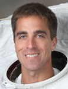

Lyndon B. Johnson Space Center
Houston, Texas 77058
|
National Aeronautics
and Space Administration Lyndon B. Johnson Space Center Houston, Texas 77058 |
 |
Biographical Data |
||
Christopher J. Cassidy (Captain, U.S. Navy)
NASA Astronaut
PERSONAL DATA: Born January 4, 1970 in Salem, Massachusetts. Considers York, Maine, to be his hometown. He and his wife, Julie, are the proud parents of three children.
EDUCATION: Graduated from York High School, York, Maine; completed Naval Academy Prep School, Newport, Rhode Island, 1989; received a Bachelor of Science in Mathematics, U.S. Naval Academy, 1993; received a Master of Science in Ocean Engineering, Massachusetts Institute of Technology, 2000.
ORGANIZATIONS: U.S. Naval Academy Alumni Association; Massachusetts Institute of Technology Alumni Association; Fraternal Order of Underwater Demoliton Team (UDT)/Sea, Air, Land Team (SEAL) Association.
SPECIAL HONORS: Honor graduate of Basic Underwater Demolition/SEAL (BUD/S) Class 192; awarded the Bronze Star with combat ‘V’ and Presidential Unit Citation for leading a nine-day operation at the Zharwar Kili cave complex – a national priority objective directly on the Afghanistan/Pakistan border; Quest speaker at the U.S. Naval Academy Combat Leadership Seminar, 2003, 2004; awarded a second Bronze Star for combat leadership service in Afghanistan, 2004; NASA Exceptional Achievement Medal.
EXPERIENCE: Ten years as a member of the U.S. Navy SEALs Team. He made four six-month deployments: two to Afghanistan, and two to the Mediterranean. Cassidy served as executive officer and operations officer of Special Boat Team Twenty in Norfolk, Virginia, and SEAL platoon commander at SEAL Team THREE in Coronado, California. He deployed to the Afghanistan region two weeks after September 11, 2001, served as ground assault force commander for international and U.S. only combat missions in Afghanistan, and led two months of noncompliant ship-boardings in the Northern Arabian Gulf. He was SEALs delivery vehicle platoon commander at SEAL Delivery Vehicle Team TWO in Norfolk, VA. He accumulated more than 200 hours underwater as pilot/navigator/mission commander of a two-man flooded submersible SEAL Delivery Vehicle (SDV), which is launched and recovered from a host-ship submarine. He also served as dry deck shelter platoon commander at SEAL Delivery Team TWO in Norfolk, VA. Cassidy volunteered for and completed a week-long, 180-mile charity kayak paddle from Norfolk, VA to Washington, D.C. to raise money and awareness for the Special Operations Warrior Foundation.
NASA EXPERIENCE: Cassidy as an astronaut was selected by NASA in May 2004. In February 2006, he completed Astronaut Candidate Training that included scientific and technical briefings, intensive instruction in shuttle and International Space Station systems, physiological training, T-38 flight training, and water and wilderness survival training. Completion of this initial training qualified him for various technical assignments within the Astronaut Office and future flight assignment as a mission specialist. From 2006 through 2008, he served as Capsule Commander (CAPCOM) in the Mission Control Center. During his NASA career, Cassidy completed six spacewalks, totaling 31 hours, 14 minutes and accumulated 182 days in space. He is currently in charge of the EVA branch within the Astronaut Office.
SPACE FLIGHT EXPERIENCE: STS-127, International Space Station Assembly Mission 2J/A, Endeavour (July 15, 2009 through July 31, 2009) delivered the Japanese-built Exposed Facility (JEM-EF) and the Experiment Logistics Module Exposed Section (ELM-ES) to the station. The crew completed the construction of the KIBO Japanese Experiment Module, installed scientific experiments on its Exposed Facility and delivered critical spare parts and replacement batteries to the orbital complex, in addition to transferring 24,638 pounds of hardware and 1,225 pounds of water to the station.
While the shuttle was docked to the station, the mission featured a record 13 astronauts working aboard the station representing all five space station partners: NASA, the Russian Space Agency, the Canadian Space Agency, the European Space Agency and the Japanese Space Agency. Cassidy performed three spacewalks totaling 18 hours and 5 minutes. The mission was accomplished in 248 Earth orbits, traveling 6,547,853 million miles in 15 days, 16 hours, 44 minutes and 58 seconds.
Expedition 35/36 (March 28, 2013 through September 11, 2013). Cassidy
and Russian cosmonauts Pavel Vinogradov and Alexander Misurkin launched
from the Baikonur Cosmodrome in Kazakhstan to the International Space
Station. The three crew members were the first to complete an expedited
trip to the station - instead of taking the standard two days to
rendezvous and dock, they arrived at the orbiting complex in less than six
hours. Cassidy, Vinogradov and Misurkin were welcomed to the space
station by Chris Hadfield of the Canadian Space Agency, Tom Marshburn of
NASA and Roman Romanenko of Roscosmos. The crew members saw the arrival
of the European ATV-4cargo spacecraft, the Japanese HTV-4 cargo spacecraft
and two Russian Progress resupply spacecraft. The trio also worked on
hundreds of research experiments and science investigations that will have
benefits for future human spaceflight and life on Earth. Cassidy
conducted three spacewalks during his 166 days aboard the station. During
the expedition, the crew completed 2,656 Earth orbits and traveled more
than 70 million miles.
JULY 2014